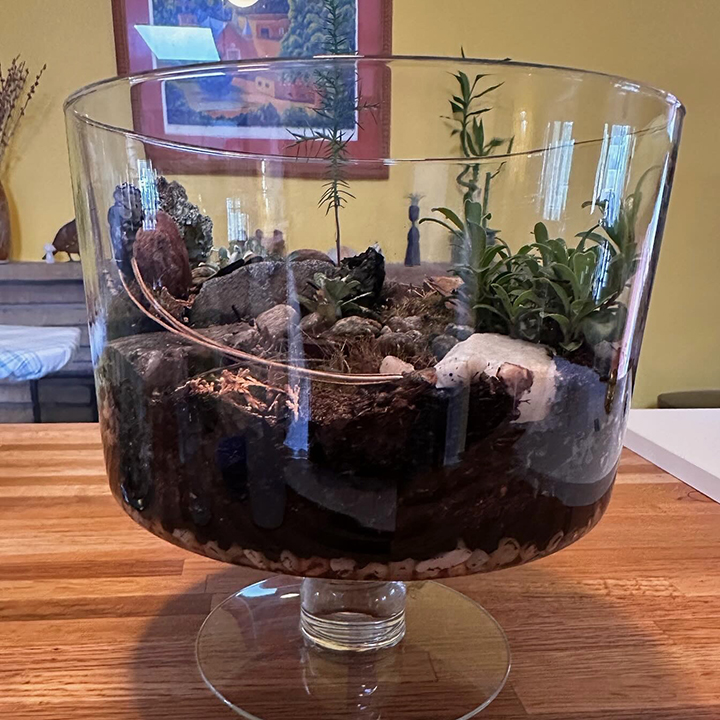
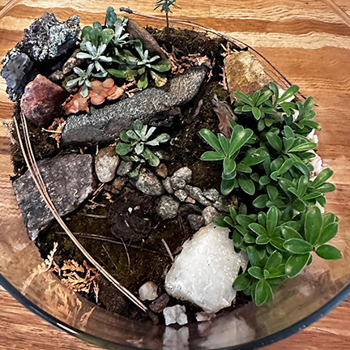
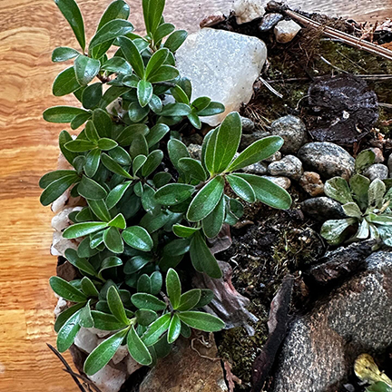
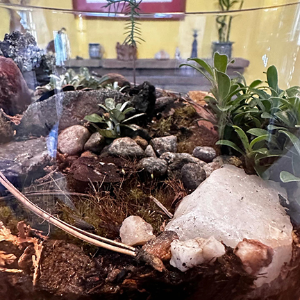
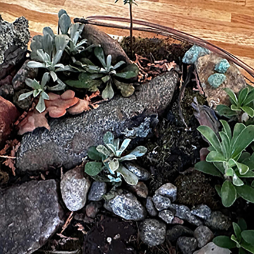
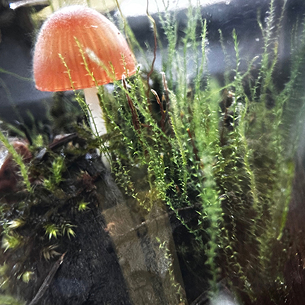
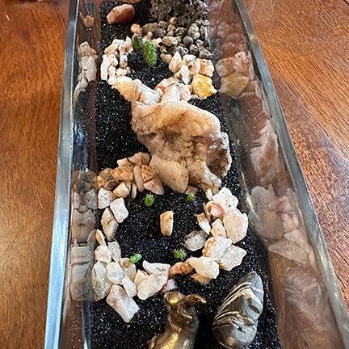
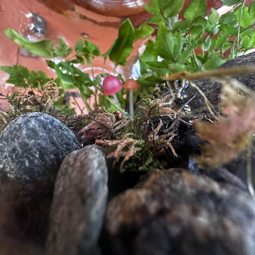

Rick Robb's Terrarium Projects

How I Got Started in the Terrarium Game
At an estate sale in early in 2024, we found some large glass jars. My wife asked if I'd be interested in doing a terrarium project with her. It seemed like it might be fun; I'd been an avid outdoor gardener for several decades. This would let me get my fingers back in the dirt until spring arrived.
I built two of them the first time, and was completely hooked. Since that then I've built 11 of them, from something as small as a yogurt jar on up to a two-gallon iced tea dispenser.
My Current Projects
My most recent project was an attempt to replicate the floor of the forests in northern New Mexico. All of the plants, mosses, lichens, rocks and forest floor detritus were collected near Penderies, NM, near where the 2022 Hermit's Peak fire was.
The plants include Kinnikinnik Ericaceae (Heath Family) and White-Margined Everlasting (antennaria marginata). The rocks include white,rose, and smoky quartz. (I dont know if the latter is really smoky quartz or if it just that it was at the bas of some of the burns.) There is also some turquoise that I picked up at an old abandoned turquoise mine at the top of one of the hills.





Some of my Past Projects
Here are a few of the terrariums I've created in 2024.
Moss in a small jar
Glass block cactus terrarium
Iced tea jar terrarium
Overhead shot of Buddha terrarium